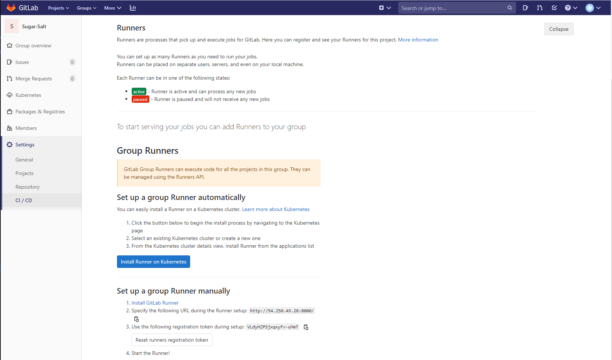

Dockerを使ってEC2にGitlabを立ててみた¶
Gitlab CI/CDのハンズオンを試すために、AWSのEC2とDockerを使ってGitlabをインスタンス上に立ててみた。
ネットワークの設定¶
今回はGitlab CI/CDを試すために一時的に環境を構築するだけなので、VPCにパブリックサブネットを作成し、Gitlab用のインスタンスを立てる。パブリックサブネットのルートテーブルにはインターネットゲートウェイを関連付ける。また、アクセスするのは自分だけなので、EC2インスタンスのセキュリティグループのインバウンドに自宅のグローバルIPをHTTP、HTTPS、SSHで設定する。
使用するEC2インスタンス¶
下記のインスタンスを立てる
| AMI | Instance Type | Storage |
|---|---|---|
| Amazon Linux 2 AMI(HVM), SSD Volume Type | t2.medium | volume type: gp2 size: 2GB |
パッケージのインストール¶
Gitlab CI/CDにはGitlabとGitlab Runnerが必要になる。一時的にハンズオン環境を構築できれば問題ないため、一つのEC2インスタンス上でDocker Composeを使ってGitlabとGitlab Runnerのコンテナを立てる。そのために、EC2にsshでログインして以下の操作を行う
パッケージをアップデートしておく
sudo yum update
コンテナの構築に使用するDocker Composeをインストールする
sudo curl -L "https://github.com/docker/compose/releases/download/1.26.2/docker-compose-$(uname -s)-$(uname -m)" -o /usr/local/bin/docker-compose
実行権限を付加する
sudo chmod +x /usr/local/bin/docker-compose
以下のバージョンが表示されれば環境は準備完了
[ec2-user@ip-10-0-1-68 ~]$ docker-compose version
docker-compose version 1.26.2, build eefe0d31
docker-py version: 4.2.2
CPython version: 3.7.7
OpenSSL version: OpenSSL 1.1.0l 10 Sep 2019
Dockerのネットワークを作成¶
GitlabとGitlab Runnerが通信するために2つを同じネットワーク上に配置する。そのためにDockerのネットワークを作成する。
docker network create gitlab_network
以下のコマンドで作成したネットワークが表示されるか確認する
[ec2-user@ip-10-0-1-68 ~]$ docker network ls
NETWORK ID NAME DRIVER SCOPE
a9471a766fe4 bridge bridge local
359795348d03 ec2-user_default bridge local
5efaa18b3451 gitlab_network bridge local
e520aa853304 host host local
4ecad3044b34 none null local
docker-compose.yamlの編集¶
EC2インスタンスのログイン直後のディレクトリでdocker-compose.yamlを作成し、以下のように編集する
[ec2-user@ip-10-0-1-68 ~]$ vi docker-compose.yaml
version: '3.7'
services:
gitlab:
image: gitlab/gitlab-ce:latest
restart: always
hostname: sugar.salt.com
environment:
GITLAB_HOST: 54.XX.XX.XX
GITLAB_PORT: 80
GITLAB_SSH_PORT: 22
GITLAB_ROOT_PASSWORD: sugar_salt
ports:
- '8000:80'
- '443:443'
- '2022:22'
volumes:
- '/srv/gitlab/config:/etc/gitlab'
- '/srv/gitlab/logs:/var/log/gitlab'
- '/srv/gitlab/data:/var/opt/gitlab'
networks:
- gitlab_network
gitLab-runner:
image: gitlab/gitlab-runner:latest
volumes:
- '/srv/gitlab-runner/config:/etc/gitlab-runner'
- '/var/run/docker.sock:/var/run/docker.sock'
networks:
- gitlab_network
depends_on:
- gitlab
networks:
gitlab_network:
external: true
docker-composeで各コンテナを起動する¶
Docker Composeで各コンテナを起動する
docker-compose -f ./docker-compose.yaml up -d
以下のコマンドで各コンテナに同一ネットワークのホストが割り当てられているか確認する。GitlabのコンテナのIPv4Addressは後に使用するのでメモしておく
[ec2-user@ip-10-0-1-68 ~]$ docker network inspect gitlab_network
[
{
"Name": "gitlab_network",
"Id": "5efaa18b3451ee6264f48f70343bc0b60de107f55d9f8b4a5837ade79a181a36",
"Created": "2020-09-09T16:58:16.997862422Z",
"Scope": "local",
"Driver": "bridge",
"EnableIPv6": false,
"IPAM": {
"Driver": "default",
"Options": {},
"Config": [
{
"Subnet": "172.19.0.0/16",
"Gateway": "172.19.0.1"
}
]
},
"Internal": false,
"Attachable": false,
"Ingress": false,
"ConfigFrom": {
"Network": ""
},
"ConfigOnly": false,
"Containers": {
"8291b0970d88feca3850cb24c748c88a4f9f14b5b4e5b6d35202752f5d41c13c": {
"Name": "ec2-user_gitLab-runner_1",
"EndpointID": "94285eeeb5363bcf9d099fb822f1d22084c45479fbb9f34a5fba9288a0877629",
"MacAddress": "02:42:ac:13:00:03",
"IPv4Address": "172.19.0.3/16",
"IPv6Address": ""
},
"9cf2f57fbc36a9d5ffabaac1fa1b00320e056d8e4b474c52ef83a6276e032c14": {
"Name": "ec2-user_gitlab_1",
"EndpointID": "a35081e26c2dc24a2ea837f3e11c9775b9ca56c589547d0328644d3555351443",
"MacAddress": "02:42:ac:13:00:02",
"IPv4Address": "172.19.0.2/16",
"IPv6Address": ""
}
},
"Options": {},
"Labels": {}
}
]
Gitlabにログインしてregister tokenを確認する¶
Gitlabにログインして適当にプロジェクトを作成したら、sidebarのSettings -> CI/CD -> Runnerからregister tokenを確認しメモしておく。register tokenはGitlabにGitlab Runnerを登録する際のgitlab-ci tokenとして使用する

GitlabにGitlab Runnerを登録する¶
以下のコマンドでGitlab RunnerのコンテナIDを確認する
[ec2-user@ip-10-0-1-68 ~]$ docker ps
CONTAINER ID IMAGE COMMAND CREATED STATUS PORTS NAMES
8291b0970d88 gitlab/gitlab-runner:latest "/usr/bin/dumb-init …" 13 days ago Up 21 minutes ec2-user_gitLab-runner_1
9cf2f57fbc36 gitlab/gitlab-ce:latest "/assets/wrapper" 13 days ago Up 22 minutes (healthy) 0.0.0.0:443->443/tcp, 0.0.0.0:2022->22/tcp, 0.0.0.0:8000->80/tcp ec2-user_gitlab_1
確認したコンテナIDでGitlab Runnerのコンテナに入る
docker exec -i -t 8291b0970d88 bash
コンテナ内でviを使用できるようにパッケージをインストールする。コンテナのイメージはUbuntu系なのでコマンドは以下になる
apt-get update
apt-get install vim
Gitlab Runnerのregisterコマンドで設定を行う。URLにはhttp://gitLab/を指定する。gitlba-ci tokenには先ほどメモしたトークンを入力する。不要な部分はEnterで進む
root@8291b0970d88:/# gitlab-runer register
Running in system-mode.
Please enter the gitlab-ci coordinator URL (e.g. https://gitlab.com/):
http://gitLab/
Please enter the gitlab-ci token for this runner:
gPntqNp5LNa6FMqLyf_D
Please enter the gitlab-ci description for this runner:
[64a46551905e8]:
Please enter the gitlab-ci tags for this runner (comma separated):
Registering runner... succeeded runner=LDz9ciJ5
Please enter the executor: parallels, shell, docker-ssh+machine, kubernetes, docker, docker-ssh, ssh, virtualbox, docker+machine:
docker
Please enter the default Docker image (e.g. ruby:2.1):
centos:centos7
Runner registered successfully. Feel free to start it, but if it's running already the config should be automatically reloaded!
上記の設定だけではまだGitlabとGitlab Runner間で通信ができないため、設定ファイルを編集する。docker-composeで各コンテナを起動した際にメモしたGitlabコンテナのDockerネットワークでのローカルIPを使用してclone_urlを設定する。インターネットから見た時のEC2インスタンスは54.XX.XX.XXであり、GitlabコンテナもGITLAB_HOSTでこのグロバールIPに紐づいているが、Dockerネットワーク内のGitlab RunnerコンテナからみたGitlabコンテナのIPはdocker-composeで各コンテナを起動した際に確認したIPである。また、内部ポートは80を空けているためclone_urlはhttp://172.19.0.2:80/を設定する。network_modeは先ほど作成したgitlab_networkを設定する
vi etc/gitlab-runner/config.toml
[session_server]
session_timeout = 1800
[[runners]]
name = "CI"
url = "http://gitLab/"
token = "gPntqNp5LNa6FMqLyf_D"
executor = "docker"
clone_url = "http://172.19.0.2:80/"
[runners.custom_build_dir]
[runners.cache]
[runners.cache.s3]
[runners.cache.gcs]
[runners.docker]
tls_verify = false
image = "centos:centos7"
privileged = false
disable_entrypoint_overwrite = false
oom_kill_disable = false
disable_cache = false
volumes = ["/cache"]
shm_size = 0
network_mode = "gitlab_network"
GitlabでRunnerが使用可能か確認する¶
sidebarのSettings -> CI/CD -> RunnerでGitlab Runnerが当されていることを確認する